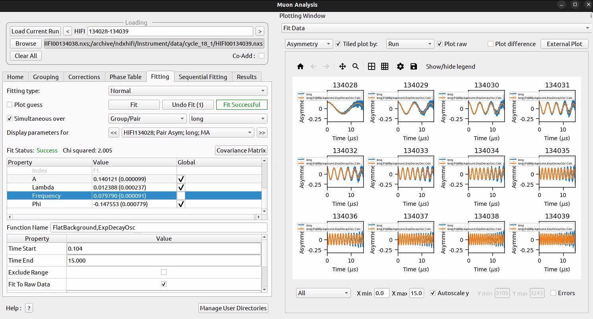

Muon Testing¶
Ionic Diffusion test¶
Preparation
- Instrument
EMU - Files
51341.nxs,51342.nxsand51343.nxs - Make sure the location of these files is included in your search directories. Full instructions are available online.
Time required 5 - 10 minutes
- Make sure that the
.nxsfiles are in one of the directories on Mantid’s search path.
- Open Muon Analysis
- Choose
Machine:EMU - In
Load Runenter51341 - Under
Settingstab, ensure theEnable Multiple Fittingis checked - In
Data Analysis Tab- Beside
Runsenter51341-3and checkSimultaneousbelow - Right click the
Fit Functiontable area; selectAdd Function - Add
Background>Flat Background - Add
Muon>DynamicKuboToyabe - Check the
Globalbox for:A0,Asym,Delta,Nu - Click on the value
0.0000forField- a...box should appear, click it- On the
Setdropdown, selectFix All - Enter values of
0,5,10for the three runs
- On the
- Set
A0 = 0.05,Asym = 0.15,Delta = 0.2,Nu = 0.1 - Click
Fit>Fit
- Beside
- In the
Results Tabletab- Under
Fitting Resultscheck theSimultaneousbutton - Click
Create Table - A table should appear in the main Mantid work area
- Under
- In the
Results Tableworkspace- Expected values (similar to within 50%) ..
- f0.A0: -0.083439833711330152
- f1.Asym: 0.19125607982528858
- f1:Delta: 0.3301445010124604
- f1:Nu: 0.8574644977974730220884
- In the workspaces section of the main Mantid window:
- Click of the
MuonSimulFit_5141-3group - Within this there should be three workspaces
- Right-click each workspace
- Choose
Plot spectrum - Choose
1D plotand clickPlot All
- Click of the
Possible problems¶
- Loading local data for 51341-3; these may not be in recognised directories - make sure that this is the case.
Superconducting Copper Test¶
Preparation
- Files
EMU00020882.nxs–EMU00020900.nxs - Make sure the location of these files is included in your search directories
Time required 5 - 10 minutes
- Make sure that the
.nxsfiles are in one of the directories on Mantid’s search path.
- Open Muon Analysis
- Choose
Machine:EMU - In
Load Runenter20882 - Click the
>tab next toLoad Runa few times, this should produce new plots each time - Under
Settingstab, ensure theEnable Multiple Fittingis un-checked - After loading
20884switch to theData Analysistab - Right click under
Propertyand selectAdd Function - Choose
Muon>ExpDecayMuon - Click
Fit>Fit - Click
Fit>Sequential Fit - Beside
Runsenter20889-20900 - Click
start - Close the
Sequential Fitswindow - Switch to the
Results Tabletab - In the
Fitting Resultstable check theSequentialradio button - In the
Valuestable checkRun NumberandField_Danfysik - Ensure that all runs are checked in the
Fitting Resultstable - Click
Create Table - In the main Mantid GUI select the
ResultsTablein theWorkspacestab, this is the one you just created - Right click and select
Convert to MatrixWorkspace - In the resulting dialog select
Column XasField_DanfysikandColumn Yaslambda - Click
Run - Right click the new workspace created in the
Workspacestab - Select
Plot Spectrum - You should get something like the following plot:

HIFI Transverse Field Simultaneous Fitting¶
Preparation
- Files
HIFI00134028–HIFI00134039.nxs - Make sure the location of these files is included in your search directories
- Make sure that the instrument in the Muon Interface is set to
HIFI
Time required 5 - 10 minutes
- Open the Muon interface, load the first file
HIFI00134028
- Using the
>to the right of theLoad Databox, step through to134034 - Go to the
Grouping Optionstab - Click
Guess Alpha- in thePair Tablebox a value of Alpha close to 1.3 should appear - Return to
Hometab - Click
>until all data sets up to134039have been loaded - In the
Settingstab ensure thatEnable Multiple Fittingis checked - Go to the
Data Analysistab - Right-click in the
Fit Functionsbox - Select
Add function - Choose
Background>Flat Background - Right-click again and
Add function - Choose
Muon>ExpDecayOsc - In the
Fit Functionwindow select all parameters exceptFrequencyto beGlobal - In the
Runsbox enter134028-39 - Check the
Simultaneousradio button - Select
Fit>Fit - After some time the fir should fail to converge, with a large
Chivalue (>100) reported in theFit Functionbox. - So we want to re-start to see if the fit works a different way
- In the main Mantid
Workspacesdialog select all the workspaces and delete them - Back in the Muon interface load up
HIFI00134034 - Go to
Grouping Optionsand selectGuess Alpha - Go to the
Data Analysistab - In the
Runsbox enter134028-39 - Check the
Simultaneousradio button - Add the same functions as above (
Flat BackgroundandExpDecayOsc) - In the
Fit Functionwindow select all parameters exceptFrequencyto beGlobal - Click on the value of the
Frequencyparameter; a...box should appear, click it - Enter values for each of the rows in the table that opens, values
from
0.0 - 1.1in steps of0.1 - Click
OK - Select
Fit>Fit - You should now get a significantly lower
Chi-sqvalue (<10) - In the main Mantid window
- Click on the
MuonSimulFit_134028-39 - Scroll to the workspaces
- Right-click on one, choose
Plot spectrum - Choose
1D Plotand selectPlot All - You should get some plots like this:

Transverse Field Asymmetry Test¶
Preparation
- Files
MUSR00062260.nxs - Make sure the location of these files is included in your search directories
- Make sure that the instrument in the Muon Interface is set to
MUSR
Time required 5 - 10 minutes
- Open the Muon Data Analysis interface
- Go to the home tab and select instrument MUSR
- Load run
62260 - Add a “Flat Background” and “GausOsc” functions
- In the Data Analysis tab “TF Asymmetry Mode” should be ticked
- Set the “Groups/Pairs to fit” to “Custom”
- A pop-up should appear and make sure that only “fwd” is ticked
- Close the pop-up
- Run a fit